2026 · Aalst
Begraven Kind
Grootschalige locatietheaterproductie in Aalst, gebaseerd op het werk van Sam Shepard. Begraven Kind speelde in september 2026 een reeks van tien voorstellingen.
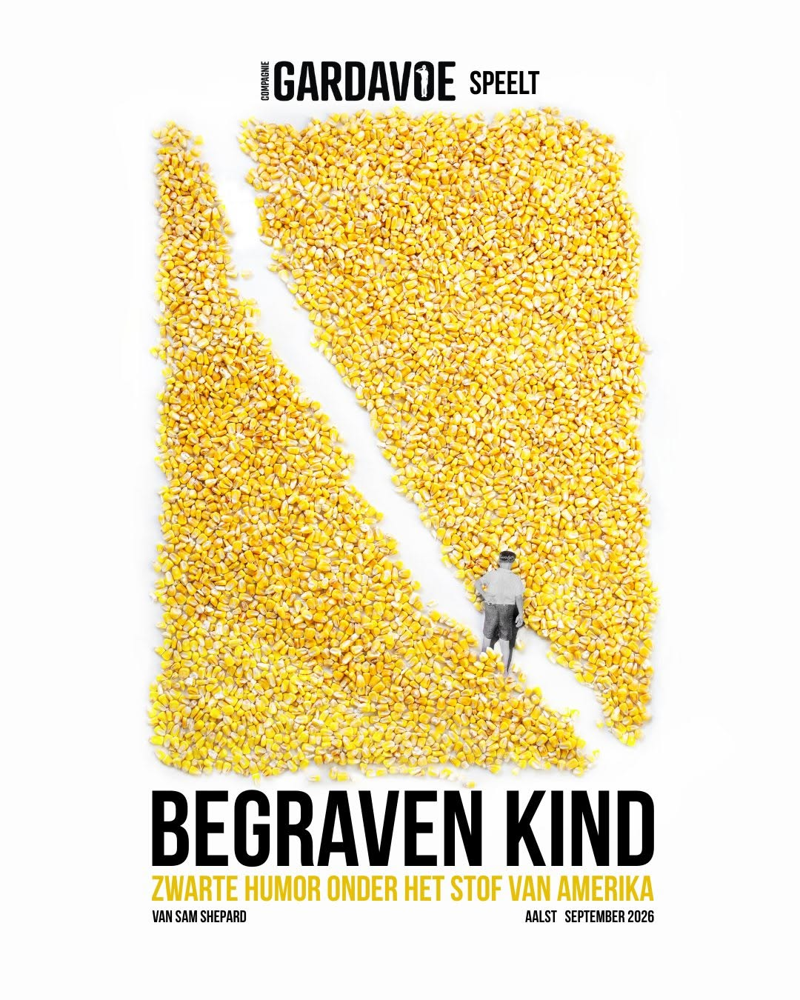
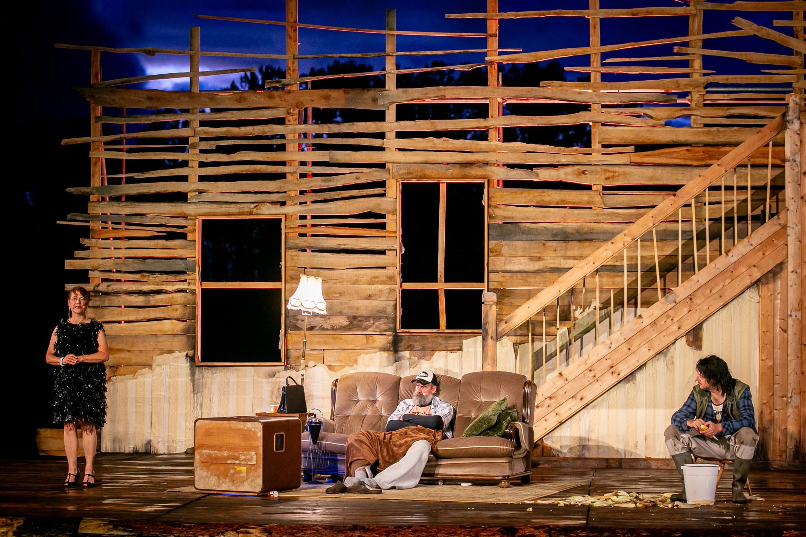
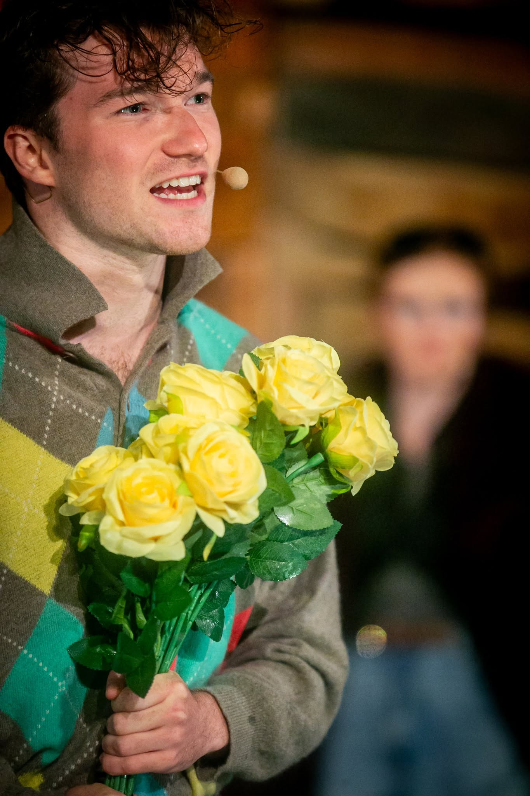
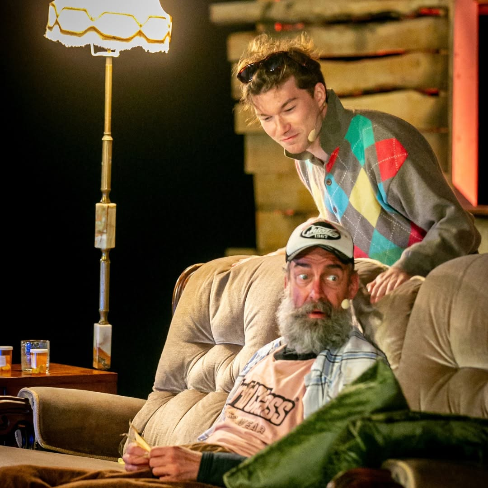
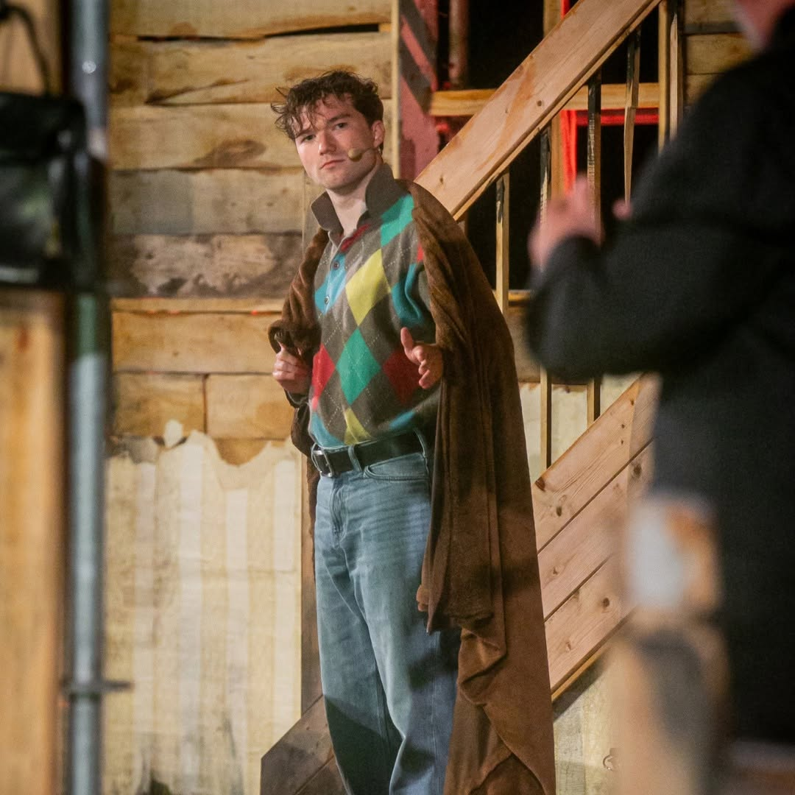
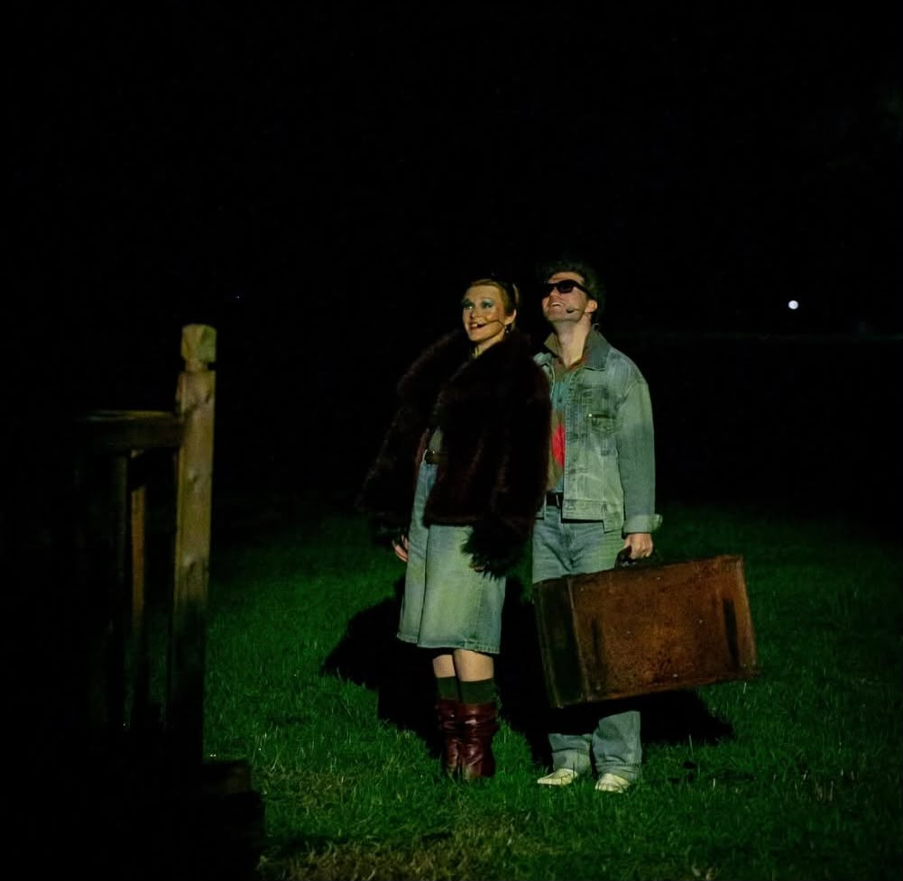
10
voorstellingen in Aalst in september
2026. Begraven Kind vormt de meest
recente productie binnen het
geselecteerde werk.
2026 · Gent
The Way You
Look Tonight
Theaterproductie gespeeld in ARCA Theater in Gent.
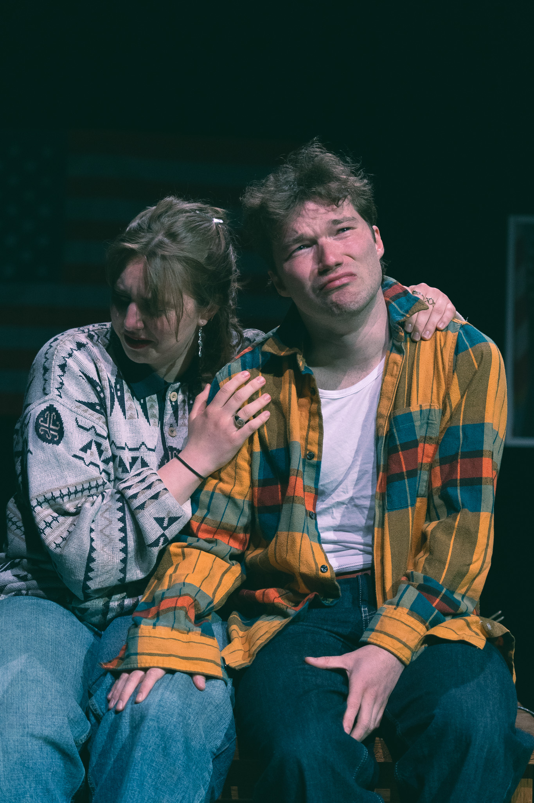
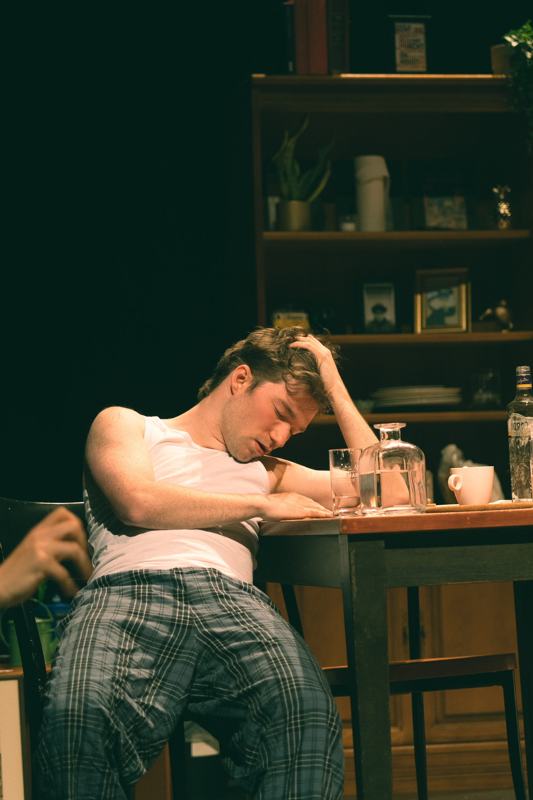
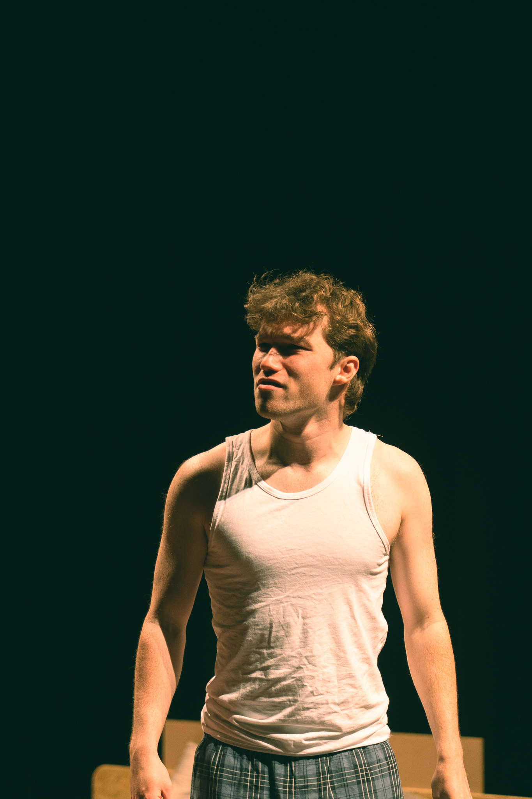
2025 · Gent
Stasiman
Theaterproductie gespeeld in ARCA Theater in Gent.
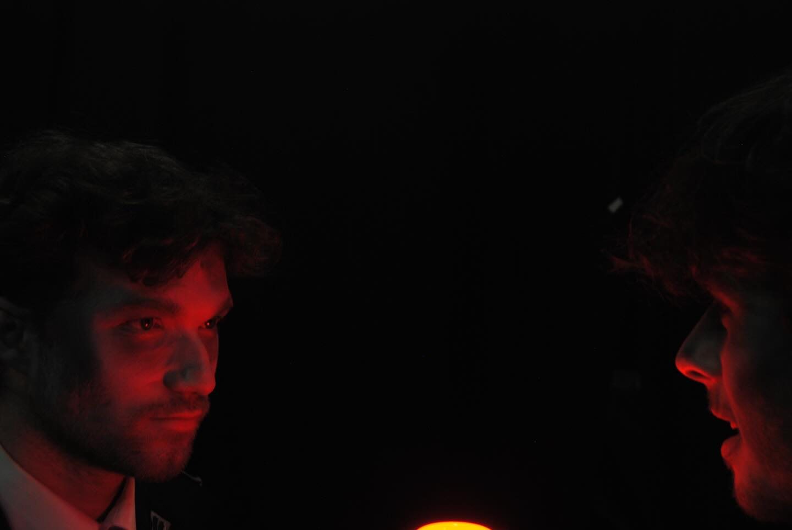
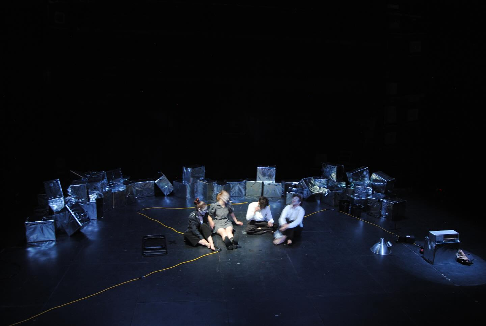